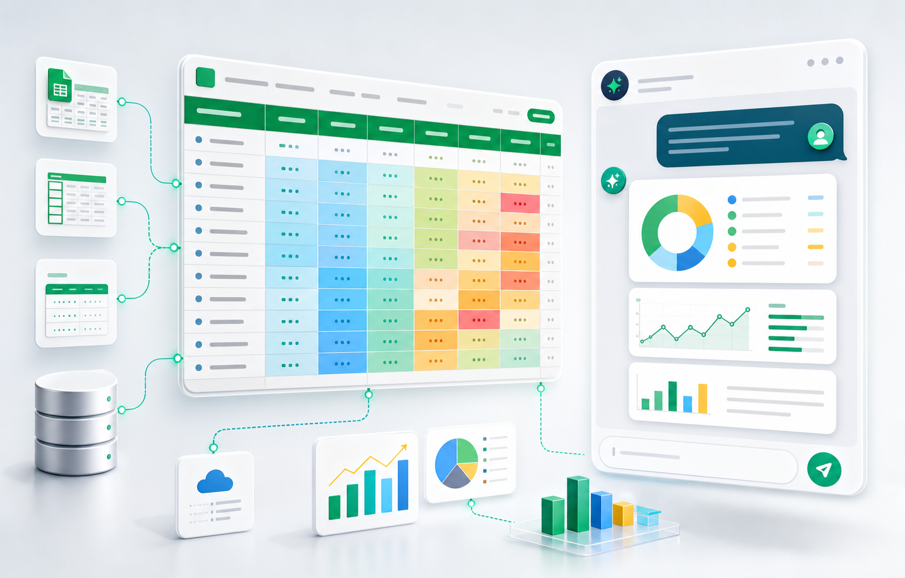

Upload controllato
Excel, CSV, TSV e Parquet vengono profilati in sandbox prima dell'import effettivo.

AI sicura per dati tabellari
Fai parlare Excel, CSV, database e report senza consegnare alla cieca i dati aziendali all'AI.
Un servizio per interrogare fogli e dataset importanti con risposte citate, filtri verificabili, sandbox sui file e provider AI scelti con criteri di sicurezza.
Non un chatbot generico
TalkToMyExcel nasce per aziende che vogliono usare l'AI sui propri dati tabellari senza perdere tracciabilita. Il sistema separa il trattamento file, l'import del dataset, il motore dati e la generazione della risposta.
Regolo.ai e il provider consigliato per scenari in cui sovranita europea, zero retention e controllo dei payload sono requisiti concreti, non note a margine.
Cosa fa
Carichi file tabellari, scegli cosa deve essere cercabile semanticamente e poi fai domande in linguaggio naturale. Le risposte combinano query strutturate e ricerca semantica.
Excel, CSV, TSV e Parquet vengono profilati in sandbox prima dell'import effettivo.
DuckDB risponde a conteggi e filtri; Chroma trova casi simili nelle colonne descrittive.
L'AI lavora su evidenze compatte: righe, tabelle e contesto selezionato.
Dataset aziendali
Il sito parla volutamente a un perimetro ampio: file, report, export da gestionali, dati post-vendita e dataset strutturati. L'implementazione attuale lavora su upload file tabellari; la promessa e rendere interrogabili i dati, non vincolarli a un formato.
Scopri la piattaformaPortalo in azienda
Parliamo di casi reali: assistenza, vendite, operation, qualita, ricambi, ticket e report periodici.